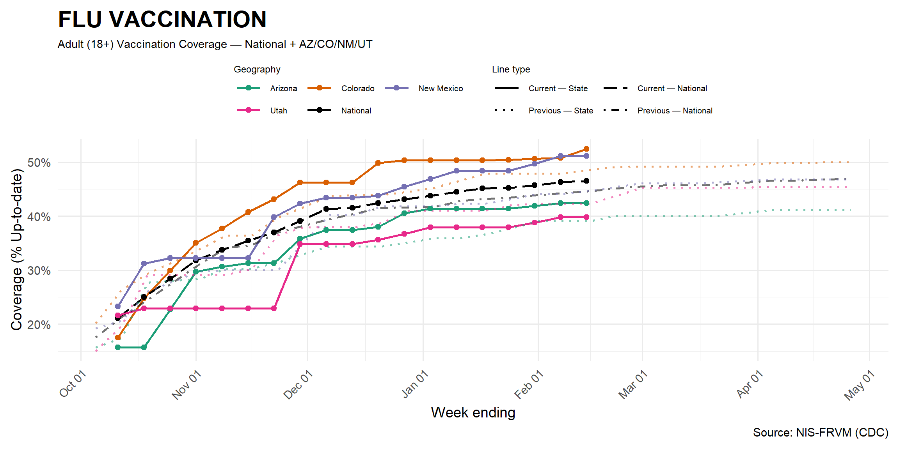
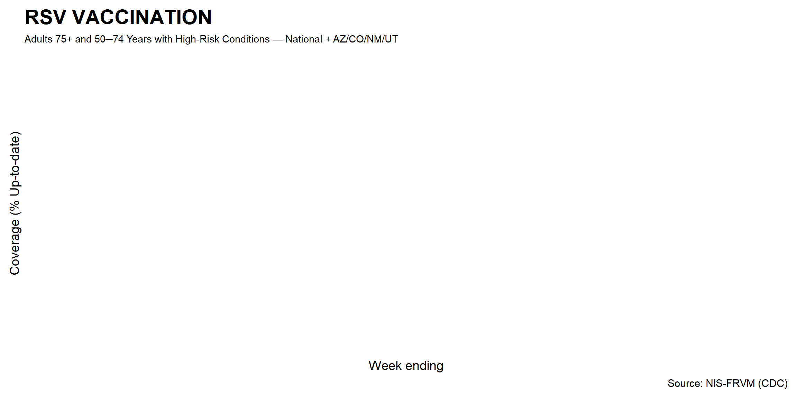
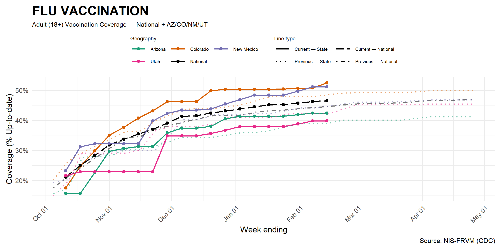
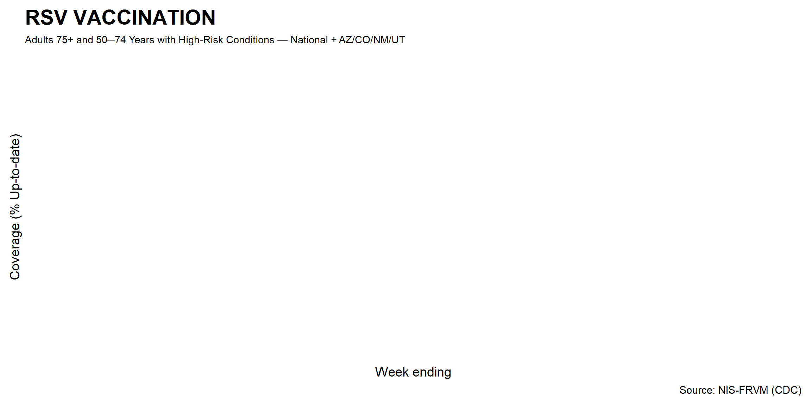

Vaccination Coverage — January 22, 2026
 

-
These figures show national and state-level trends in vaccination coverage, representing percentage of the (age-specific) population ‘up-to-date’ for vaccination against COVID-19, flu, or RSV based on National Immunization Survey Fall Respiratory Virus Module (NIS-FRVM, previously called the Adult COVID Module or NIS-ACM) data. Data are shown for the 2025-2026 respiratory virus season, beginning October 2025, and for the previous 2024-2025 season (low-opacity, dotted lines). NIS-FRVM estimates are derived from self-report data obtained through phone surveys and may differ from estimates based on other data sources. In addition to random error associated with taking a sample, NIS-FRVM data are subject to errors resulting from incomplete sample frame, selection bias, and errors in self-reported vaccination status. Estimates are weighted to selected sociodemographic characteristics of the U.S. population to reduce possible bias from incomplete sample frame and selection bias. Visit National Immunization Survey for more information on survey methodology.
Coverage for COVID-19 and flu is shown for all individuals over 18, while RSV vaccination is shown for adults 50 years and older. State-specific estimates for pediatric RSV vaccination coverage are not available at this time. Current CDC adult RSV vaccination recommendations are for a single dose of RSV vaccine for all adults 75 years and older and adults 50–74 years who are at increased risk for severe RSV disease. RSV vaccination coverage estimates for seasons before the 2025-2026 are not available at this time.
| Current Situation (latest available week) | |||
| State | Virus | Latest ED % of visits | Latest Hosp Admissions (wk) |
|---|---|---|---|
| Arizona | COVID | 0.4% | 90 |
| Arizona | INFLUENZA | 2.0% | 219 |
| Arizona | RSV | 0.1% | 39 |
| Colorado | COVID | 0.8% | 108 |
| Colorado | INFLUENZA | 4.2% | 465 |
| Colorado | RSV | 0.3% | 76 |
| New Mexico | COVID | 1.1% | 63 |
| New Mexico | INFLUENZA | 4.3% | 239 |
| New Mexico | RSV | 0.1% | 20 |
| Utah | COVID | 0.4% | 23 |
| Utah | INFLUENZA | 4.1% | 157 |
| Utah | RSV | 0.2% | 16 |
| Latest hosp: 2026-01-10; latest ED: 2026-01-04 | |||
About this report:
-
This report describes recent state-level trends in respiratory virus
activity in Arizona, Colorado, New Mexico, and Utah. It presents data on
three respiratory viral diseases: COVID-19, influenza (flu), and
respiratory syncytial virus (RSV). Trends in emergency department visits
are based on
National
Syndromic Surveillance Program (NSSP) data and provide estimates of
how much symptomatic illness each virus is causing. Hospitalization
trends are drawn from
National
Healthcare Safety Network (NHSN) data and estimate the burden of
severe disease and impact on the healthcare system caused by each virus.
Emergency department visit and hospitalization data from the previous
year are also shown for comparison.
- For more information related to scenario projections for COVID, flu, and RSV, comparing outbreak trajectories under different assumptions around key features of interventions, pathogens, and populations that drive diseaseexp(-0.) dynamics, visit the ScenarioModelingHub.
- For more information on current and past season vaccination coverage for each pathogen, visit RespVaxView.
- Note: Some current estimates, particularly for emergency department utilization, may still be impacted by holiday reporting effects.